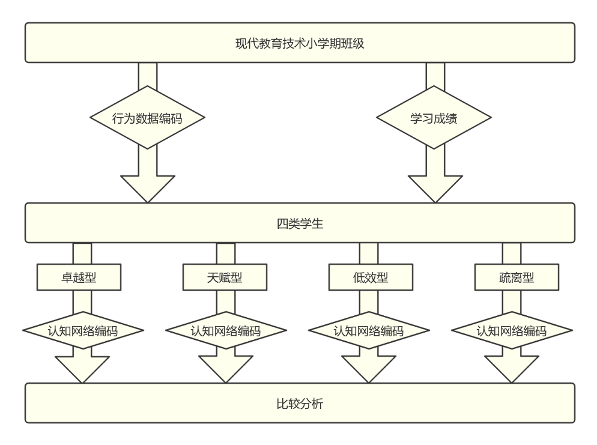
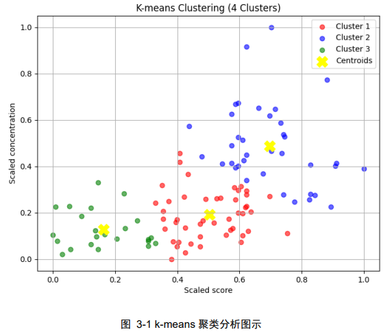

Abstract
This study innovatively integrates Bloom’s taxonomy with epistemic network analysis (ENA) to conduct a typological study of learning engagement and academic achievement in university online classes. Using data from a “Modern Educational Technology” online course, students were clustered into high-achieving engaged, high-achieving low-engagement, and low-achieving low-engagement types, with cognitive differences examined through epistemic network analysis. Results indicate a positive correlation between learning engagement and achievement, though high achievement does not always require high engagement. High-achieving engaged learners demonstrate strong higher-order thinking in understanding, analysis, and evaluation. High-achieving low-engagement learners focus on understanding and application but show limited evaluation, while low-achieving low-engagement learners remain at memorization and simple application, reflecting lower cognitive complexity. This study provides methodological and data support for precision teaching and course optimization, offering theoretical and practical value for enhancing online learning outcomes and higher education quality.
Research Focus
The research aims to reveal how students’ engagement behaviors and learning outcomes correlate, and how different learner types exhibit distinct cognitive patterns in online environments. By combining learning analytics and cognitive modeling, it seeks to provide evidence for precision teaching and adaptive instructional design in higher education.
Methodogy
Using data from 107 valid student samples, the study quantified learning engagement through behavioral indicators (participation, persistence, focus, interaction, academic challenge, and self-monitoring) and measured achievement using course scores. K-means clustering divided students into three engagement–achievement types.  Students’ discussion comments were further coded according to Bloom’s six cognitive levels—remember, understand, apply, analyze, evaluate, and create—and visualized through ENA to map their cognitive connections.
Key Finding
Positive Correlation:
Learning engagement and academic achievement showed a significant positive
correlation (r = 0.512, p < 0.01).
Three Learner Types:
Excellent learnersdemonstrated balanced engagement and strong performance,
showing higher frequencies of analysis, evaluation, and emerging creation, reflecting
advanced cognitive processing.
Gifted learners achieved high scores with lower engagement; their cognition
centered on understanding and application, with limited evaluative thinking.
Disengaged learners stayed mostly at memorization and basic application levels,
showing minimal high-order cognitive links.
Network Structure:
ENA visualizations revealed that excellent learners formed dense, interconnected networks
between understanding, analysis, and evaluation, while disengaged learners’ networks remained
shallow and memory-based.
Conclusion
The study provides actionable insights for optimizing online higher education. For teaching practice, results support the design of differentiated feedback and engagement strategies targeting learner types. For educational theory, it demonstrates the value of combining Bloom’s taxonomy with ENA to quantify cognitive depth in digital learning contexts. Ultimately, fostering students’ higher-order thinking and sustained engagement is key to improving both academic performance and learning quality in online courses.